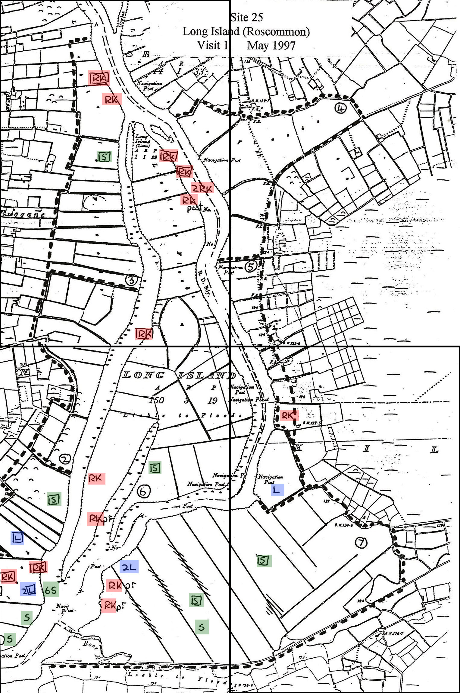

Bird Visualisation
Long Island, Roscommon - May 1997
Map Notations by Stephen Heery
AI Object Counts (from aistudio.google.com)
Redshank (RK with Pink overlay):
Snipe (S with Green overlay):
Lapwing (L with Blue overlay):
Bird Sounds
Redshank:
Your browser does not support the audio element.
Source: xeno-canto.org/741317
Snipe:
Your browser does not support the audio element.
Source: xeno-canto.org/836175
Lapwing:
Your browser does not support the audio element.
Source: xeno-canto.org/975772
